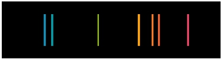
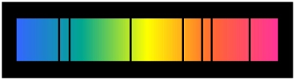

A spectral line is like a fingerprint that can be used to identify the atoms, elements or molecules present in a star, galaxy or cloud of interstellar gas. If we separate the incoming light from a celestial source using a prism, we will often see a spectrum of colours crossed with discrete lines. Note that spectral lines can also occur in other regions of the electromagnetic spectrum, although we can no longer use a prism to help identify them.
There are two types of spectral lines in the visible part of the electromagnetic spectrum:
- Emission lines – these appear as discrete coloured lines, often on a black background, and correspond to specific wavelengths of light emitted by an object.
- Absorption lines – these appear as dark bands, often superimposed on a coloured continuum, and are the result of specific wavelengths being absorbed along the line-of-sight.


The presence of spectral lines is explained by quantum mechanics in terms of the energy levels of atoms, ions and molecules. These energy levels depend on the numbers of protons, electrons and neutrons in an atom, and the limited set of configurations in which these elemental particles can exist (the set of quantum numbers). Atoms prefer to be in their ground state, where all of the electrons are located as close to the nucleus as possible. Absorption lines occur when an atom, element or molecule absorbs a photon with an energy equal to the difference between two energy levels. This causes an electron to be promoted into a higher energy level, and the atom, element or molecule is said to be in an excited state. Emission lines occur when the electrons of an excited atom, element or molecule move between energy levels, returning towards the ground state.
The spectral lines of a specific element or molecule at rest in a laboratory always occur at the same wavelengths. For this reason, we are able to identify which element or molecule is causing the spectral lines. If the emitter or absorber is in motion, however, the position of the spectral lines will be Doppler shifted along the spectrum. A redshift (spectral lines move to longer wavelengths) occurs for an emitter/absorber moving away from the observer, while a blueshift (spectral lines move to shorter wavelengths) corresponds to motion towards the observer.
Spectral lines may also be broadended by:
- Thermal Doppler Broadening: due to the temperature of the emitter or absorber
- Collisional Broadening: due to interactions with neighbouring atoms, ions or molecules
- Zeeman Splitting: where energy levels are split into sub-levels by a magnetic field.
The Uncertainty Principle also provides a natural broadening of all spectral lines, with a natural width of Δν = ΔE/h ≈ 1/Δt where h is Planck’s constant, Δν is the width of the line, ΔE is the corresponding spread in energy, and t is the lifetime of the energy state (typically ~10-8 seconds).